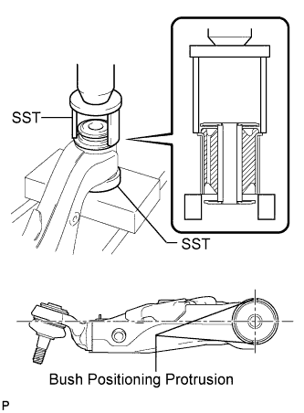
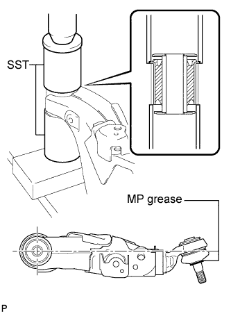

FRONT LOWER SUSPENSION ARM > REASSEMBLY |
| 1. INSTALL FRONT NO. 1 SPRING BUMPER LH |
Install the 2 No. 1 spring bumpers.
| 2. INSTALL FRONT NO. 2 LOWER ARM BUSH LH |
 |
Using SST and a press, press in a new bush.
| 3. INSTALL FRONT NO. 1 LOWER ARM BUSH LH |
 |
Using SST and a press, press in a new bush.
Apply MP grease to the locations shown in the illustration.
| 4. INSTALL FRONT LOWER BALL JOINT ATTACHMENT LH |
Install the attachment with the nut and a new cotter pin.